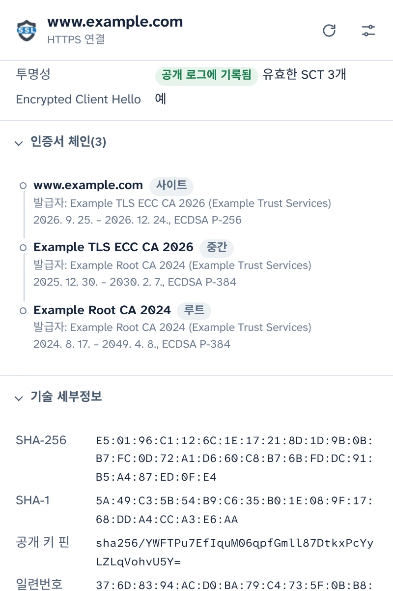
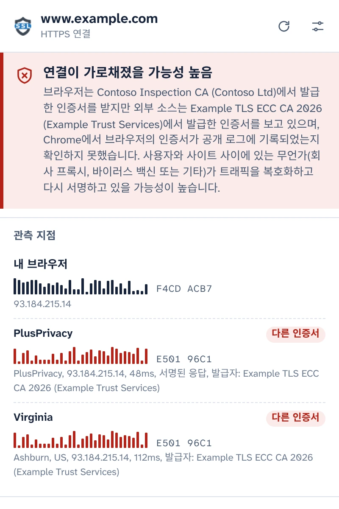
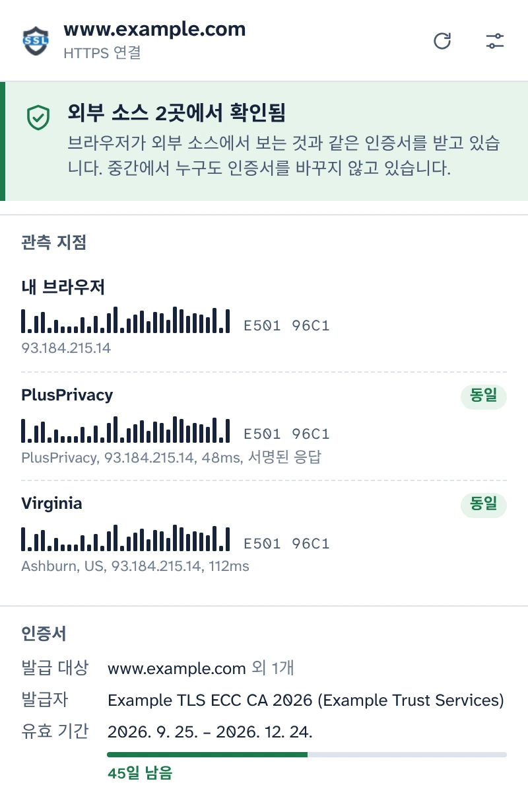
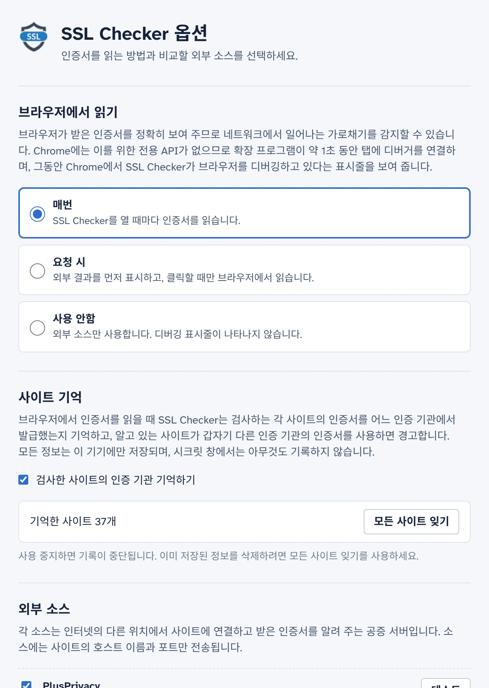

브라우저가 실제로 받은 인증서를 보세요
SSL Checker는 탭에 열린 사이트의 인증서를 Chrome에서 직접 읽고, 독립 공증 서버가 인터넷의 다른 위치에서 보는 인증서와 비교합니다. 두 인증서가 다르면 사용자와 사이트 사이의 무언가가 인증서를 바꾸고 있는 것입니다.
무료 오픈소스입니다. 계정도, 분석 도구도 없습니다.
외부 소스 2곳에서 확인됨연결이 가로채졌을 가능성 높음
브라우저가 외부 소스에서 보는 것과 같은 인증서를 받고 있습니다. 중간에서 누구도 인증서를 바꾸지 않고 있습니다.브라우저는 Contoso Inspection CA에서 발급한 인증서를 받지만, 외부 소스는 Example TLS ECC CA 2026에서 발급한 인증서를 보고 있습니다.
- 내 브라우저 E501 96C1F4CD ACB7
- PlusPrivacy 동일다른 인증서 E501 96C1
- Virginia 동일다른 인증서 E501 96C1
연결의 모든 세부정보
Chrome이 이 탭에서 받은 정보를 서버에서 다시 가져오지 않고 브라우저에서 직접 읽습니다.
- 적용되는 이름, 발급자, 유효 기간과 남은 일수, 검증 수준(DV, OV, EV)
- TLS 버전, 양자 내성 하이브리드를 포함한 키 교환, 암호화 방식, Encrypted Client Hello
- Certificate Transparency 상태와 서명된 인증서 타임스탬프(SCT)
- 전체 체인, 지문, 모든 인증서 확장. PEM을 복사하거나 체인을 다운로드할 수 있습니다.

HTTPS 가로채기 감지
회사 프록시, 바이러스 백신의 HTTPS 검사, 공용 Wi-Fi의 공격자는 모두 같은 방식으로 작동합니다. 트래픽을 복호화하고 자체 인증서를 브라우저에 건넵니다. 페이지는 평소와 같아 보이고 자물쇠 아이콘도 그대로 표시됩니다.
SSL Checker는 PlusPrivacy 공증 서버와 사용자가 추가한 공증 서버에 같은 사이트가 어떤 인증서를 보여 주는지 묻습니다. 공증 서버는 사용자 네트워크에 있는 것을 거치지 않고 인터넷의 다른 위치에서 연결합니다. 지문을 비교한 결과는 다음과 같습니다:
- 모든 곳에서 같은 인증서: 확인됨.
- 내 인증서가 다르고 공개 로그에 기록되지 않음: 가로채졌을 가능성이 높습니다. SSL Checker는 대체 인증서를 발급한 인증 기관의 이름을 알려 주고, 알려진 HTTPS 검사 제품을 식별합니다.
- 소스 간 결과가 서로 다름: 그대로 보고하고, 각 경우가 무엇을 의미할 수 있는지 함께 알려 줍니다.

중간에서 누구도 위조할 수 없는 응답
트래픽을 가로채는 무언가가 공증 서버를 사칭해 응답하려 할 수도 있습니다. 하지만 성공할 수 없습니다. PlusPrivacy 공증 서버는 모든 응답에 Ed25519로 서명하고, SSL Checker는 서명과 함께 질문마다 보낸 난수와 질문한 사이트까지 검증합니다. 위조되거나 재전송되거나 리디렉션된 응답은 거부되며, 팝업에 무언가가 응답을 변경했다고 표시됩니다.
직접 공증 서버 운영하기
공증 서버는 오픈소스입니다. Docker용 작은 Node.js 서비스로, 요청 폭주와 사설 네트워크로 향하는 요청을 막도록 보호되어 있습니다. 아무 서버에나 설치하고 옵션에서 주소와 키를 추가하면 그 응답도 같은 방식으로 검증됩니다.

디버거 실행 시점은 사용자가 결정
Chrome에는 로드된 페이지의 인증서를 가져오는 확장 프로그램 API가 없으므로, SSL Checker는 인증서를 읽는 약 1초 동안 탭에 Chrome의 디버거를 연결하며 그동안 Chrome에 디버깅 표시줄이 나타납니다. 이 작업을 언제 할지는 옵션에서 선택합니다:
- 매번: 팝업을 열 때마다
- 요청 시: 팝업에서 한 번 클릭하면
- 사용 안함: 공증 서버에만 요청
검사한 사이트를 기억합니다
SSL Checker는 각 사이트가 사용하는 인증 기관을 기억하고, 알고 있는 사이트가 갑자기 다른 인증 기관의 인증서를 사용하면(예: 새 Wi-Fi 네트워크에서) 경고합니다. 사이트 기억은 기기에만 저장되고 시크릿 창에서는 사용되지 않으며, 옵션에서 사용 중지하거나 삭제할 수 있습니다.

개인정보 보호 중심 설계
- 팝업에서 동의하기 전에는 아무것도 읽거나 보내지 않습니다.
- 기기 밖으로 나가는 정보는 사이트의 호스트 이름과 포트뿐이며, 사용하는 공증 서버로 보내는 HTTPS 요청 본문에 담겨 전송됩니다.
- PlusPrivacy 공증 서버는 검사한 사이트를 기록하지 않습니다. 이 서버를 사용 중지하거나 직접 운영하는 공증 서버에만 요청할 수도 있습니다.
- 분석 도구도, 추적도, 계정도 없습니다. 사이트 기억은 기기 밖으로 나가지 않습니다.
- 이 웹사이트에도 분석 도구가 없으며 다른 서버에서 아무것도 로드하지 않습니다.
POST /v1/cert
Content-Type: application/json
{
"host": "www.example.com",
"port": 443,
"nonce": "Xq3MpTb0vR9kLs2eWn5yZA"
}